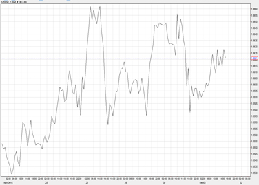
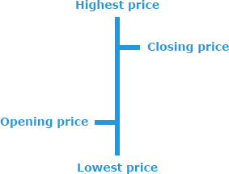
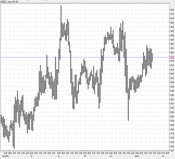
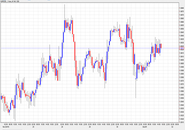
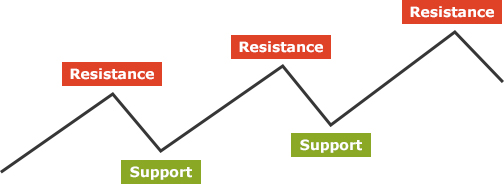

Understanding
technical analysis
Technical Analysis uses historic price movements to try and predict future price movements. According to this theory, price movements move in certain patterns that can be tracked and recognized.
Let's start with charts
Yes, we know, charts can be intimidating, but they're the main tool for technical traders. Why? Because if all market information is reflected in price, the only thing that traders need to consider is price movement. What type of charts are there? Here are a few popular examples...
Line chart
a simple line following the price movement… that’s all. The line is drawn from a specific closing price to the next closing price. It offers a nice overview of price movement across time.
Bar charts
Each ‘bar’ represents a single segment of time (a few minutes, an hour, a day, a week, etc.). It shows the opening and closing prices as well as the relevant highs and lows. The bottom of the vertical bar indicates the lowest traded price for that time period, while the top of the bar indicates the highest price paid. The opening price is located on the left side of the bar and the closing price is on the right side.
 Candlestick chart
just like a bar chart, a vertical line represents the price range – highest to lowest. The difference is that the middle section of a candlestick chart shows the difference between the opening and closing rates. Usually, if the center “candle” section is filled, the asset closed lower than it opened. If it’s “empty” it closed higher than it opened. However, in some cases, a different indicator can be used (e.g. different colors).
Market trends
Trend is the general direction of the price movement of an instrument, or of a specific market. Depending on the timeframe, trends can last years or minutes, but the accepted common classifications are short term, midterm or long term. Trending can be described in one of two ways; either a ‘bull market’ (where prices are either rising or expected to rise) or a ‘bear market’ (where prices are either falling or expected to fall).
Bull and bear markets can be used as financial indicators. For example, the beginning of a bull market is viewed by some as an indicator of economic expansion. The beginning of a bear market is seen by some as an indicator of economic contraction. Remember: Traders’ sentiment regarding future economic conditions affects prices.
Support and resistance
What every trader wants to know is when, exactly, is a trend changing. According to technical analysis, support and resistance represent price levels from which a specific instrument rarely moves above (resistance) or below (support). Confused? Here’s a cute diagram we made just for you.

Support and resistance are the price levels at which many investors are willing to sell the instrument (if we’re dealing with resistance) or buy it (if we’re dealing with support).
In some cases, it might look as if a support or a resistance level has been broken, but later on you’ll discover that the market was only “testing” it. The more “tests” that fail to break a resistance or support level, the stronger the resistance or support is.
According to technical analysis, by understanding these levels and following them, you could decide when to buy and when to sell.
Technical indicators
The iFOREX trading platform features an 'Indicator Wizard' that includes many types of popular indicators used by technical traders. Here are a few popular examples:
Pivot points
This short-term indicator is used to determine the market’s trend over specific time frames and to identify potential ‘support and resistance levels’.
Moving Average Convergence/Divergence (MACD)
MACD attempts to discover changes in the direction, strength, duration and momentum of trends in a specific instrument.
Elliott Wave
This principle claims that the market has repetitive cycles, theoretically reflecting investor sentiment. Theses cycles (waves) have patterns. Traders try to identify these patterns, aiming to predict what the price of an instrument will do next.
Bollinger Band
A Bollinger Band® is used by some investors to measure the "highness" or "lowness" of a price relative to previous trades. These bands are used as indicators of volatility and can be used to identify patterns.
According to the theory, the closer the price moves to the upper band, the more overbought the instrument is. The closer the price moves to the lower band, the more oversold the instrument is. When the market becomes increasingly more volatile, the bands widen. When the market becomes less volatile, the bands become narrower.
Fibonacci strategy
In a Fibonacci sequence, every number following the first two is the sum of the two preceding numbers. For example: 0 , 1 , 1 , 2 , 3 , 5 , 8 , 13 , 21 , 34 , 55 , 89 , 144 , …
Some traders use the Fibonacci retracement levels as support and resistance areas as well as ‘take profit’ levels. Because many people place market orders on these levels, they can sometimes become self-fulfilling prophecies.